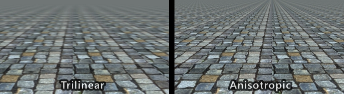

Texturing
- As per Epic's recommendations, use .png, .tga, tif or .psd; Do not save uncompressed images as .jpg
- Textures must have pixel dimensions that are powers of 2.
- A texture may be non-square/rectangles, but the width and height still have to be powers of 2 (such as
1024x512or64x128)
- A texture may be non-square/rectangles, but the width and height still have to be powers of 2 (such as
- Textures dimensions should be as small as possible and their dimensions should not exceed
8192x8192pixels. - As a rule of thumb, if you double the dimensions of a texture, it's file-size increases ~4x (exact size depends on image format, compression, etc)
- For the sake of simplicity we will avoid using channel packed textures since it is more error prone and also harder to author using conventional tools
- In the case where an alpha mask/channel is needed, it's fine to include it in the color map instead of authoring a dedicated alpha texture
Power of two texture dimensions
| Dimension | Power of 2 | Approx. internal file size |
|---|---|---|
| 16 | 2^4 | 312 B |
| 32 | 2^5 | 824 B |
| 64 | 2^6 | 2.8 KB |
| 128 | 2^7 | 10.8 KB |
| 256 | 2^8 | 42.8 KB |
| 512 | 2^9 | 170 KB |
| 1024 | 2^10 | 682 KB |
| 2048 | 2^11 | 2.66 MB |
| 4096 | 2^12 | 10.6 MB |
| 8192 | 2^13 | 42.6 MB |
Color Spaces
Since certain textures contains colors and other contains vectors or scalar values, it's important to handle their color space properly.
sRGB images are gamma corrected when viewed on a monitor. This transformation is undesired for non-color scalar/vector value which should instead be saved and treated as linear values.
Texture maps such as metallic and roughness does not contain colors but 0-1 values that are used to control material properties and should therfore be treated as linear.
Normal maps contains normal vectors and not actual colors. Gamma correcting normal maps changes the normal vectors and will result in incorrect results. Normal maps should thus also be linear.
linear: No gamma correctionsRGB: Gamma correction
| Texture type | Color space | Note |
|---|---|---|
| Color (Albedo/Diffuse) | sRGB | Contains colors and should be gamma corrected |
| Normal | Linear | Contains normal vectors and not colors |
| Roughness | Linear | Contains linear grayscale values 0-1 |
| Metallic | Linear | Contains linear grayscale values 0-1 |
Texture Filtering
Anisotropic filtering is very cheap on modern hardware and results in sharper texture filtering than plain Bilinear**/**Trilinear filtering. If manually overriding filter, prefer Anisotropic filtering >= 8x.
